ROTEIROS MONITORADOS
ROTEIRO ARTES
Fazem parte: MAM, MASP, Pinacoteca e Memorial.
O MASP é o mais importante museu de arte ocidental do Hemisfério Sul. Seu acervo é tombado pelo Patrimônio Histórico e Artístico Nacional - IPHAN desde 1969.
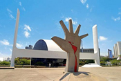
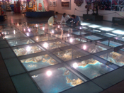
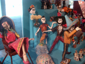
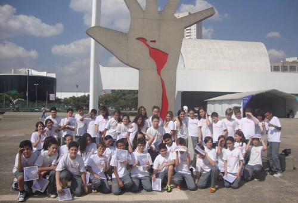
ROTEIRO CIÊNCIAS
Fazem parte: Catavento, Sabina, INPE.
A Sabina Escola Parque do Conhecimento é um dos principais centros de ciências interativos de educação contemporânea do Estado de São Paulo.
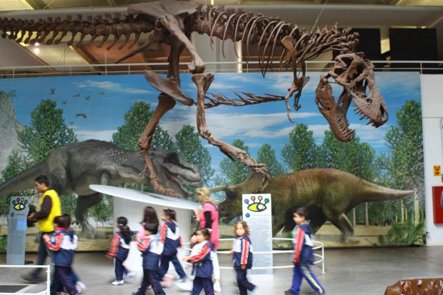
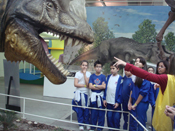
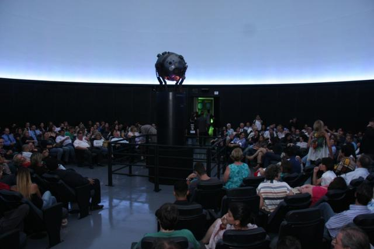
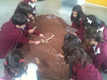
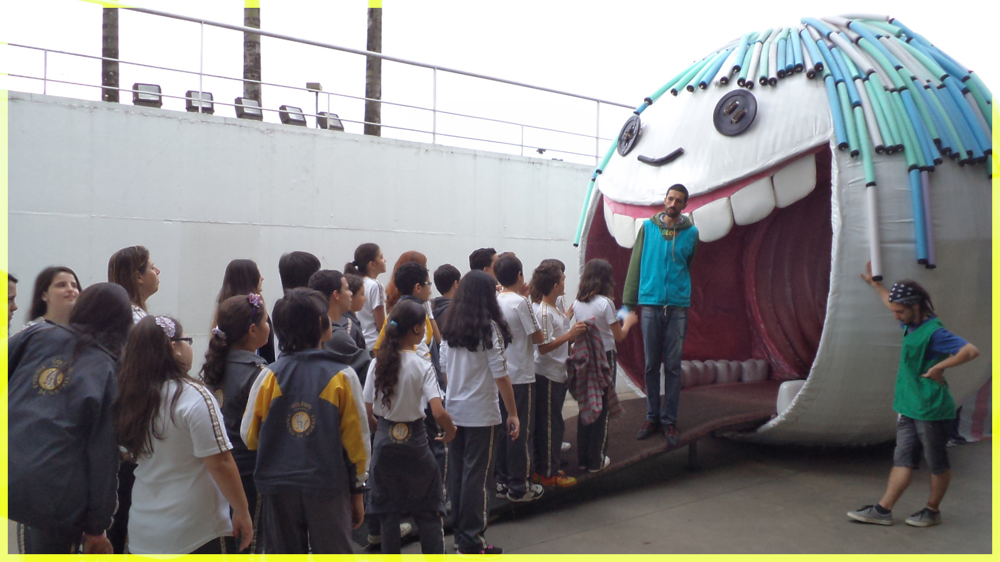
ROTEIRO HISTÓRICO
Fazem parte: Museu do Futebol, Maria Fumaça e Museu do Imigrante.
No Museu do Futebol, a história do esporte se cruza com a história do Brasil em salas multimídias e interativas.
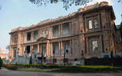
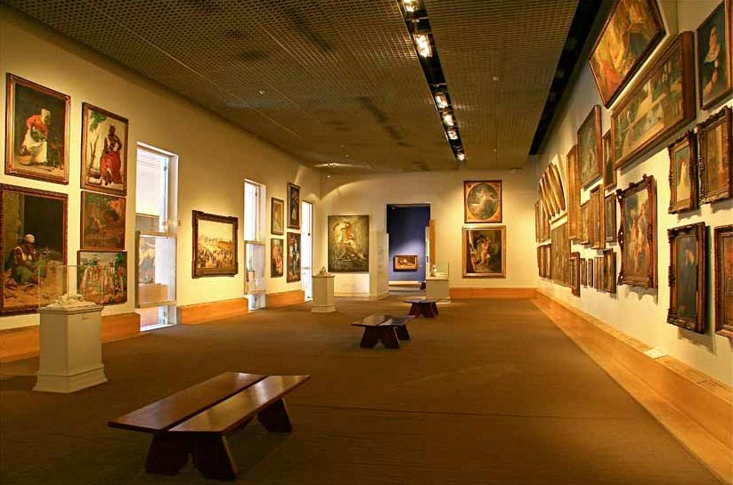
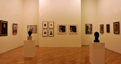
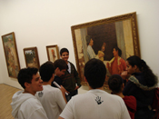
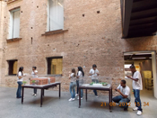
ROTEIRO SERES VIVOS
Fazem parte: Zoológico, Jardim Botânico, Aquário de Ubatuba.
O Parque Zoológico de São Paulo é o maior do Brasil, abrigando mais de 3.200 animais em uma área de Mata Atlântica original.
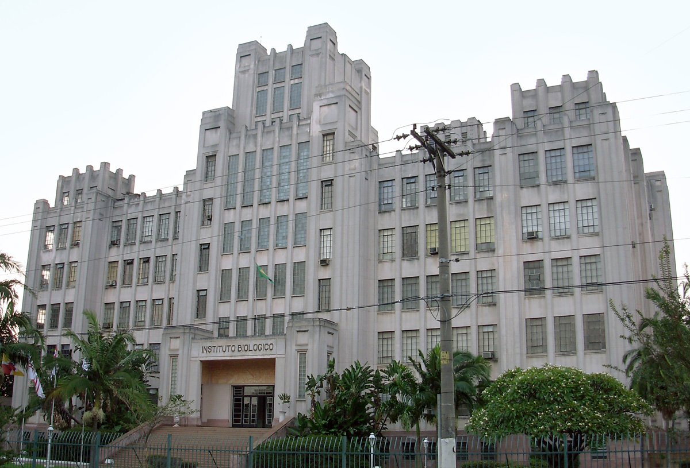
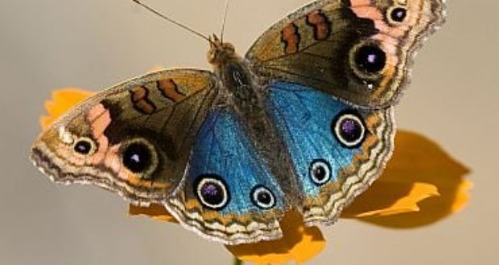
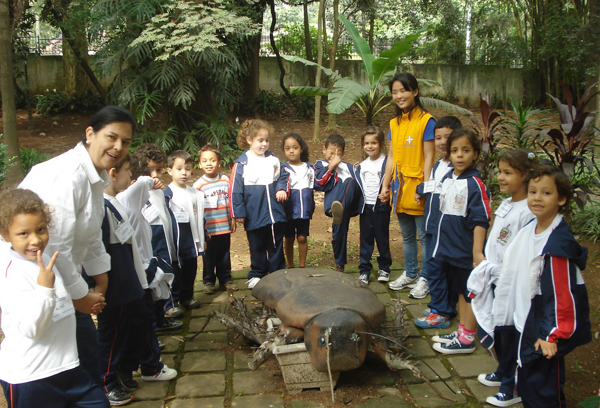
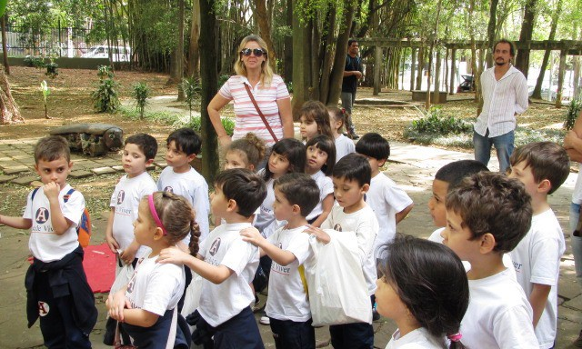
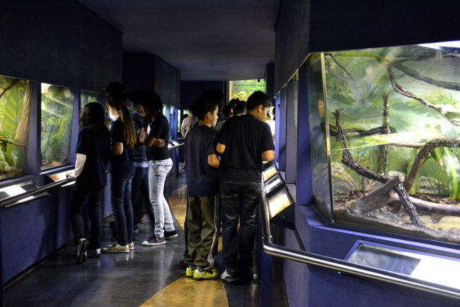
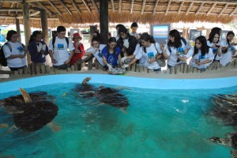
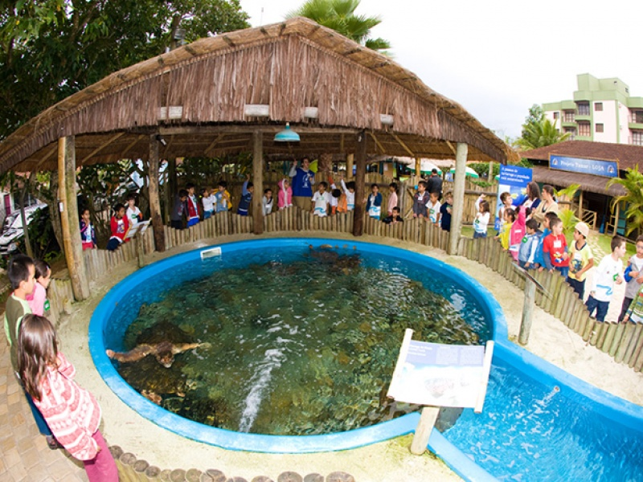
ROTEIRO CULTURAL E HISTÓRICO
Fazem parte deste Roteiro: Museu Afro, Parque do Jaraguá e Museu da Língua Portuguesa reaberto em 31/07/2021. Uma parceria inédita com o Museu do Ipiranga traz uma gameficação online para os alunos.
Ponto mais alto da cidade de São Paulo, com 1.135 metros de altitude, o Pico do Jaraguá proporciona ao visitante o mais incrível panorama da capital paulista (com uma vista que alcança até 55 quilômetros) e um aspecto, no mínimo, inusitado da cidade para os acostumados somente ao incessante movimento da megalópole.
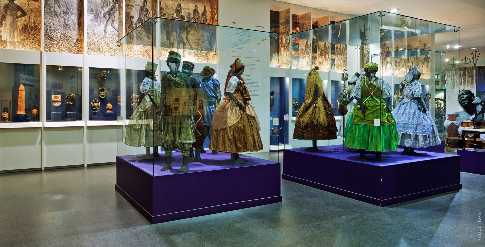
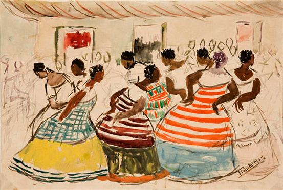
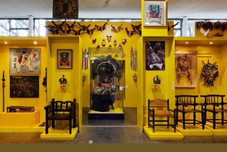
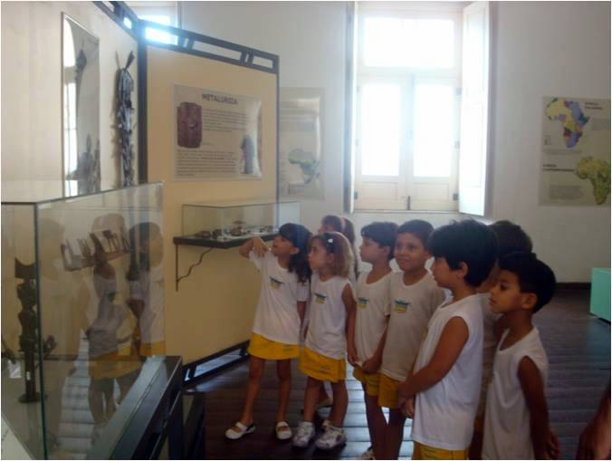
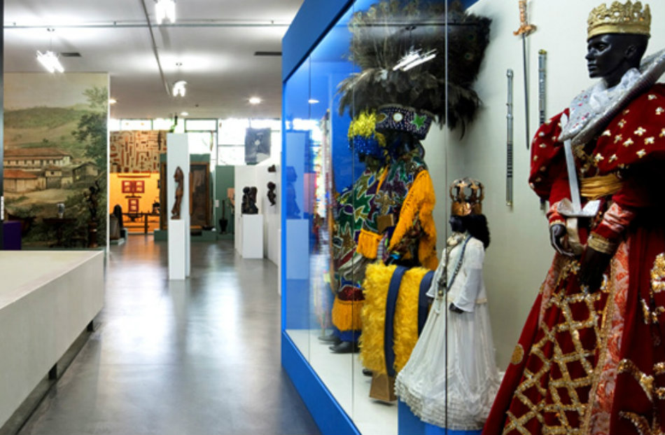